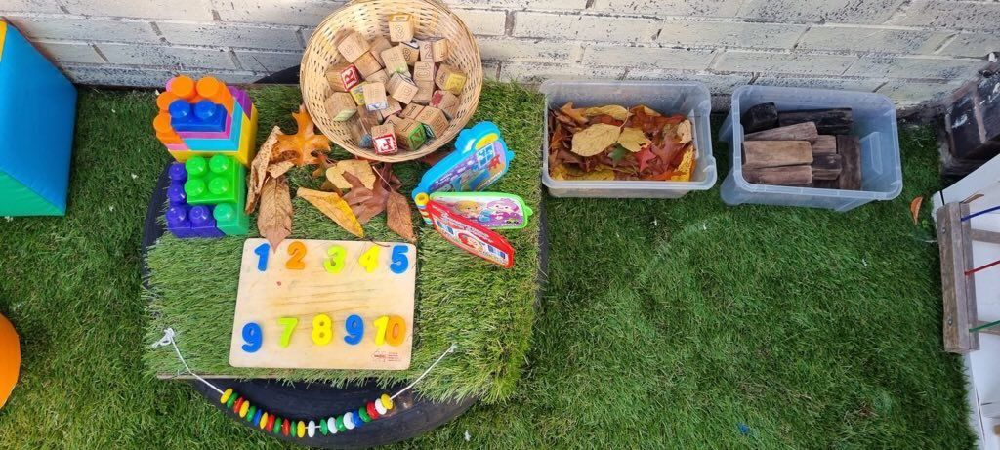

Choosing the right nursery often starts with one simple question: Will my child be happy and safe here? For families searching for a Pre-School Nursery Near Levenshulme, Manchester, this question usually comes with many others. Parents want reassurance, clarity and a setting that feels right from day one.
This guide explores what matters most when choosing a nursery and shows how Lemon Tree Preschool provides a supportive, nurturing environment for children in the local community. It highlights key features, learning approaches and practical considerations to help parents make an informed decision.
Pre-School Nursery Near Levenshulme, Manchester: What Parents Look For
Most parents begin their search by focusing on trust and care. A pre-school nursery near Levenshulme should offer a calm environment where children feel secure while learning at their own pace. Families often look for warm staff interactions, consistent routines and a clear learning approach that supports early development.
Moreover, parents in Manchester value nurseries that balance education with emotional well-being. According to the UK Government’s Early Years Foundation Stage guidance, early learning should support communication, personal development and physical growth through everyday experiences. More on our EYFS curriculum.
This naturally leads parents to consider location and daily practicality.
Why Location Matters When Choosing a Nursery in Levenshulme
A nursery near Levenshulme, Manchester, makes daily life simpler. Shorter journeys mean less stress in the mornings and more quality time at home. For young children, familiar routes and surroundings can make transitions smoother and reduce anxiety during drop-off.
However, location is not just about convenience. A local pre-school in Levenshulme helps children feel part of their community. Walking past familiar shops or parks reinforces routine and comfort. This sense of belonging often helps children settle faster, which supports emotional security in the early years.
Once the location feels right, parents usually want to know more about the nursery itself.
An Introduction to Lemon Tree Preschool
Lemon Tree Preschool is known locally for its friendly and welcoming atmosphere. As a community nursery in Levenshulme, it focuses on creating a space where children feel valued and supported every day. The approach is centred on care, curiosity and gradual learning rather than pressure.
Parents often appreciate that the nursery prioritises relationships first. Children are encouraged to explore at their own pace while staff gently guide learning through play. This style reflects modern early years practice across the UK and aligns with national childcare standards set by Ofsted.
Understanding how children learn in these settings helps parents feel more confident.
Our Early Years Learning Approach
An effective early years nursery in Levenshulme follows a structure that supports natural development. At Lemon Tree, learning is shaped around age-appropriate activities that build communication, movement and social skills gradually. Children learn best when they feel relaxed and curious rather than rushed.
The EYFS framework highlights learning through play as a core principle. This includes storytelling, creative play and simple problem-solving. These experiences help children develop confidence and independence early on, which prepares them for later stages of education.
That balance becomes clearer when we look at play and structure together.
Supporting Child Development Through Play and Structure
Play-based learning is not random. Structured play helps children understand routines and boundaries while still enjoying freedom. For instance, group activities encourage sharing and listening while creative corners allow independent expression.
Research published by the UK Department for Education shows that play supports emotional regulation and early language skills in young children. These principles guide daily learning at Lemon Tree.
A supportive learning approach works best in a safe environment.
Safe, Nurturing Environment for Young Children
A safe nursery for toddlers in Manchester must go beyond basic supervision. Emotional safety is just as important as physical care. Children need to feel understood, especially during early separation from parents.
At Lemon Tree Preschool, calm spaces and predictable routines help children settle. Clear safeguarding policies are followed in line with Ofsted expectations. Ofsted’s guidance on childcare safety standards can be found in the Early Years Inspection Handbook.
When children feel secure, they are more open to learning and social interaction.
Qualified Staff and Caring Educators at Lemon Tree Preschool
A pre-school nursery with qualified staff in Manchester relies heavily on the people working with children every day. Experience, patience and consistency make a real difference. Staff members play a vital role in recognising individual needs and responding appropriately.
At Lemon Tree, educators focus on building trust first. For example, a shy child might be gently encouraged to join group play without pressure. This approach reflects best practice in early years education supported by UK childcare training standards.
Strong staff relationships naturally shape the daily routine.
Daily Routine and Activities at Our Pre-School Nursery
Children thrive on routine. A typical day at a pre-school in Levenshulme, Manchester includes free play, guided learning, snacks and quiet moments. These predictable patterns help children feel confident and reduce uncertainty.
Activities often include creative play and learning, simple counting games and outdoor exploration. According to NHS guidance on child development, regular routines support emotional stability in early childhood.
Routine also supports social learning, which grows naturally over time.
How Lemon Tree Preschool Compares to Other Local Nurseries
Every nursery has its own feel. Parents often notice differences in class size, communication style and learning pace. Lemon Tree Preschool is often recognised for its calm atmosphere and strong parent relationships.
| Feature | Lemon Tree Preschool | Typical Local Nursery |
| Learning style | Play-based and structured | Varies |
| Parent communication | Regular and open | Limited in some settings |
| Community focus | Strong local connection | Mixed |
These differences help families choose what suits their child best.
Final Thoughts
Finding the right Pre-School Nursery Near Levenshulme, Manchester is about trust, comfort and connection. Parents want a place where their child feels safe, understood and encouraged to grow at their own pace. A welcoming environment and caring educators can make a real difference in building early confidence and a positive attitude towards learning.
Lemon Tree Preschool offers a supportive setting where children can explore, learn and develop with reassurance. If you are considering local options, visiting in person often helps everything feel clearer.
FAQs
At what age can my child start at Lemon Tree Preschool?
Most children start between the ages of two and four. It depends on the child’s readiness and nursery availability. The staff will guide parents on the best start time.
Is Lemon Tree Preschool suitable for first-time nursery children?
Yes, the settling-in process is gentle and supportive. Children are gradually introduced to routines and activities. This helps them feel safe and confident in the new environment.
What makes a pre-school nursery different from a daycare?
A pre-school nursery focuses on early learning as well as care. It follows the EYFS framework to guide development. Daycare typically provides supervision without structured learning.
How does the nursery support early learning and development?
Learning happens through play, structured routines, and interaction. Children are encouraged to explore, communicate, and solve problems.
Is Lemon Tree Preschool close to public transport in Levenshulme?
Yes, it is easily accessible for local families. The location is convenient for buses and nearby routes. This ensures smooth daily drop-offs and pick-ups.